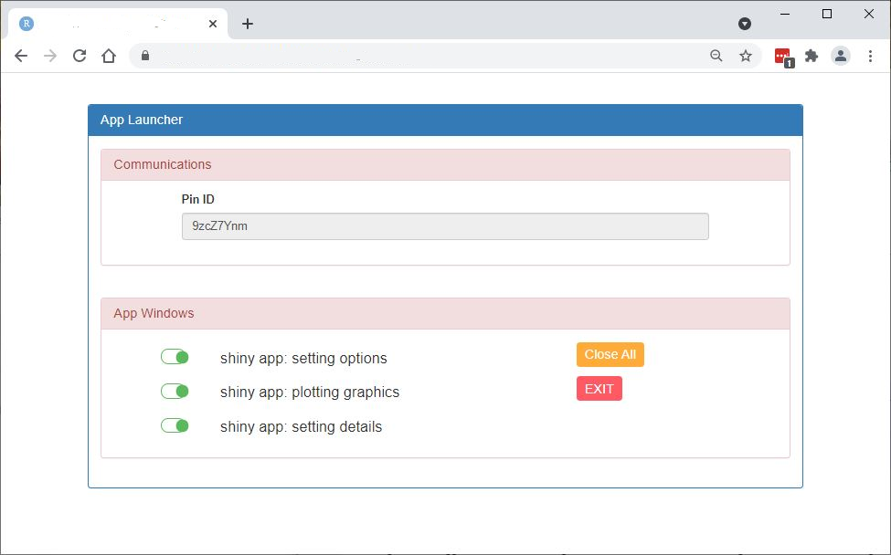

graph TB
subgraph launcher
app_options --> pin;
pin --> app_graphics;
pin --> app_details;
end
An earlier post described a multiwindow shiny app that demonstrated how three shiny apps could be handled by a fourth with data passing between them. This extends the concept, running all apps on RStudio Connect and manages the communication using the {pins} library. Data is passed between the apps using a json file attached to a pin on an RStudio Connect board. When the app is exited, the pin is deleted.
Folder Structure
The folder structure is identical to the shiny server version, under the multiwindow project folder:
multiwindow
├── launcher
│ ├── app.R
│ └── www
│ └── script.js
├── app_options
│ └── app.R
├── app_graphics
│ └── app.R
└── app_details
└── app.R There are four apps along with a javascript file which handles opening windows: - launcher/app.R - an app that manages opening and closing the other shiny apps as well as defining the json file location. - launcher/www/script.js - a javascript file that opens shiny apps in minimal browser windows of specified size and location. - app_options/app.R - a simple app that allows the user to select a number of options and writes them to a json file. - app_graphics/app.R - a simple app that reads in the json file and plots a chart. - app_details/app.R - a simple app that reads in the json file and outputs the file contents.
Concept
launcher controls opening and closing of the other three apps (app_options, app_graphics and app_details). Communication is handled using a pin.
When the app is exited the pin is deleted.
Code
launcher/app.R
## App lauuncher
## This app manages all others
library(shiny)
library(shinyWidgets)
library(stringi)
library(pins)
server <- function(input, output, session) {
## register board
pins::board_register_rsconnect("HL_board", account = "liebeha1")
## create a pin name
pin_name <- stringi::stri_rand_strings(1, length = 8)
url_base <- ** RSTUDIO CONNECT URL **
## define app windows
app_windows <- data.frame(
name = c("app_options", "app_graphics", "app_details"),
app = c("447", "448", "449"),
launch_delay = c(0, 2000, 0),
height = c(0.25, 0.4, 0.25),
width = c(0.095, 0.2, 0.095),
left = c(0.02, 0.02, 0.125),
top = c(0.02, 0.33, 0.02),
closable = c(TRUE, TRUE, TRUE),
stringsAsFactors = FALSE
)
app_windows$url <- paste0(url_base, app_windows$app, "/?pin=", pin_name)
## launch all apps
for (i in 1:nrow(app_windows)) {
Sys.sleep(app_windows[i, ]$launch_delay / 1000)
session$sendCustomMessage("launch_app", app_windows[i, ])
}
observe({
req(!is.null(input$txt_com_file))
session$sendCustomMessage("disable", "txt_com_file")
})
output$ui_communications <- renderUI({
column(10, offset = 1, textInput("txt_com_file", label = "Pin ID", width = "100%", value = pin_name))
})
# app_options ------------------------------------------------------------------
## options UI
output$ui_app_options <- renderUI({
fluidRow(
column(1, offset = 1, style = "margin-top: 8px;", prettySwitch("swt_app_options", status = "success", label = NULL, inline = TRUE, bigger = TRUE, value = TRUE)),
column(5, h4("shiny app: setting options")),
column(2, offset = 1, actionBttn("but_close_all", label = "Close All", style = "simple", color = "warning", size = "sm"))
)
})
## switch enable
observe({
req(!is.null(input$swt_app_options))
if (!app_windows[1, ]$closable) {
session$sendCustomMessage("disable", "swt_app_options")
}
})
## close app_options
observeEvent(input$swt_app_options, {
if (input$swt_app_options == TRUE) {
session$sendCustomMessage("launch_app", app_windows[1, ])
} else {
session$sendCustomMessage("close_app", app_windows[1, ])
}
})
# app_graphics ------------------------------------------------------------------
## graphics UI
output$ui_app_graphics <- renderUI({
fluidRow(
column(1, offset = 1, style = "margin-top: 8px;", prettySwitch("swt_app_graphics", status = "success", label = NULL, inline = TRUE, bigger = TRUE, value = TRUE)),
column(5, h4("shiny app: plotting graphics")),
column(2, offset = 1, actionBttn("but_exit", label = "EXIT", style = "simple", color = "danger", size = "sm"))
)
})
## switch enable
observe({
req(!is.null(input$swt_app_graphics))
if (!app_windows[2, ]$closable) {
session$sendCustomMessage("disable", "swt_app_graphics")
}
})
## close app_options
observeEvent(input$swt_app_graphics, {
if (input$swt_app_graphics == TRUE) {
session$sendCustomMessage("launch_app", app_windows[2, ])
} else {
session$sendCustomMessage("close_app", app_windows[2, ])
}
})
# app_details ------------------------------------------------------------------
## details UI
output$ui_app_details <- renderUI({
fluidRow(
column(1, offset = 1, style = "margin-top: 8px;", prettySwitch("swt_app_details", status = "success", label = NULL, inline = TRUE, bigger = TRUE, value = TRUE)),
column(5, h4("shiny app: setting details"))
)
})
## switch enable
observe({
req(!is.null(input$swt_app_details))
if (!app_windows[3, ]$closable) {
session$sendCustomMessage("disable", "swt_app_details")
}
})
## close app_options
observeEvent(input$swt_app_details, {
if (input$swt_app_details == TRUE) {
session$sendCustomMessage("launch_app", app_windows[3, ])
} else {
session$sendCustomMessage("close_app", app_windows[3, ])
}
})
## close all apps
observeEvent(input$but_close_all, {
for (i in 1:nrow(app_windows)) {
session$sendCustomMessage("close_app", app_windows[i, ])
}
})
## exit application
observeEvent(input$but_exit, {
## remove pin
pins::pin_remove(name = pin_name, board = "HL_board")
## close all windows
for (i in 1:nrow(app_windows)) {
session$sendCustomMessage("close_app", app_windows[i, ])
}
## close window and finish
shiny::stopApp()
})
}
ui <- fluidPage(
tags$head(
tags$script(type = "text/javascript", src = "script.js")
),
br(),
br(),
fluidRow(column(10, offset = 1,
panel(status = "primary", heading = "App Launcher",
panel(status = "danger", heading = "Communications",
uiOutput("ui_communications")
),
br(),
panel(status = "danger", heading = "App Windows",
fluidRow(uiOutput("ui_app_options")),
fluidRow(uiOutput("ui_app_graphics")),
fluidRow(uiOutput("ui_app_details"))
)
)
))
)
shinyApp(ui = ui, server = server)In this code, app_windows holds parameters for the three app windows. Two new parameters are included compared to the original version. app now holds the RStudio Connect app refernce number which is used to execute the app and launch_delay is a delay in milliseconds to wait before starting an app - it’s used to ensure that the pin exists before starting the second app.
launcher/www/script.js
var shiny_app_options = "";
var shiny_app_graphics = "";
var shiny_app_details = "";
// launch a shiny app
Shiny.addCustomMessageHandler('launch_app', function(x) {
scr_height = window.screen.height;
scr_width = window.screen.width;
window_height = scr_height * x.height;
window_width = scr_width * x.width;
window_left = scr_width * x.left;
window_top = scr_height * x.top;
window_options = "height=" + window_height + ", width=" + window_width + ", left=" + window_left + ", top=" + window_top;
if (x.name == "app_options") {
shiny_app_options = window.open(x.url, x.name, window_options);
} else if (x.name == "app_graphics") {
shiny_app_graphics = window.open(x.url, x.name, window_options);
} else if (x.name == "app_details") {
shiny_app_details = window.open(x.url, x.name, window_options);
}
});
// close a shiny app
Shiny.addCustomMessageHandler('close_app', function(x) {
// can't pass window name as variable to close so have to hardcode :(
if (x.name == "app_options") {
shiny_app_options.close();
} else if (x.name == "app_graphics") {
shiny_app_graphics.close();
} else if (x.name == "app_details") {
shiny_app_details.close();
}
});
// disable a shiny input
Shiny.addCustomMessageHandler('disable', function(id) {
var input_type = $("#" + id).prop("type");
if (input_type.startsWith("select")) {
$("#" + id)[0].selectize.disable();
} else {
$("#" + id).prop("disabled", true);
}
});app_options/app.R
## app_options
## A simple app that offers a series of options
library(pins)
library(shiny)
library(shinyWidgets)
library(jsonlite)
server <- function(input, output, session) {
## register board
pins::board_register_rsconnect("HL_board", account = "liebeha1")
## extract pin id from url
pin_id <- reactive({
query <- parseQueryString(session$clientData$url_search)
if (!is.null(query$pin)) {
query$pin
} else {
""
}
})
output$ui_axes <- renderUI({
req(input$sel_data)
## select x and y parameters from numeric columns
df <- get(input$sel_data)
columns <- names(df)[sapply(df, class) == "numeric"]
tagList(
selectizeInput("sel_x", "X parameter", choices = columns),
selectizeInput("sel_y", "Y parameter", choices = columns)
)
})
## write file when updating parameter
observeEvent(input$sel_data, {
write_file()
})
observeEvent(input$sel_x, {
write_file()
})
observeEvent(input$sel_y, {
write_file()
})
## write a file
write_file <- function() {
if (pin_id() != "") {
output <- list(
data = input$sel_data,
x = input$sel_x,
y = input$sel_y
)
json_out <- toJSON(output, auto_unbox = TRUE, null = "null")
## pin data
pin(json_out, name = pin_id(), board = "HL_board")
}
}
}
ui <- fluidPage(
br(),
br(),
panel(heading = "Options", status = "primary",
selectizeInput("sel_data", "dataset", choices = c("iris", "mtcars")),
uiOutput("ui_axes")
)
)
shinyApp(ui, server)app_graphics/app.R
## app_graphics
## A simple app that draws a ggplot
library(pins)
library(shiny)
library(shinyWidgets)
library(ggplot2)
library(jsonlite)
server <- function(input, output, session) {
## register board
pins::board_register_rsconnect("HL_board", account = "liebeha1")
## extract pin id from url
pin_id <- reactive({
query <- parseQueryString(session$clientData$url_search)
if (!is.null(query$pin)) {
query$pin
} else {
""
}
})
## retrieve pin data
json_data <- pin_reactive(name = pin_id(), board = "HL_board", interval = 2000)
output$plt <- renderPlot({
data <- fromJSON(json_data())
params <- c("data", "x", "y")
## check all plotting parameters are present
if (all(sapply(params, function(x) !is.null(data[[x]])))) {
ggplot(get(data[["data"]]), aes(x = .data[[data[["x"]]]], y = .data[[data[["y"]]]])) +
geom_point() +
labs(title = paste0("Plot data = ", data[["data"]]),
x = data[["x"]],
y = data[["y"]])
}
})
}
ui <- fluidPage(
br(),
br(),
panel(heading = "Graphics", status = "primary",
plotOutput("plt")
)
)
shinyApp(ui, server)app_details/app.R
## app_details
## A simple app that lists some details
library(pins)
library(shiny)
library(shinyWidgets)
library(jsonlite)
server <- function(input, output, session) {
## register board
pins::board_register_rsconnect("HL_board", account = "liebeha1")
## extract pin id from url
pin_id <- reactive({
query <- parseQueryString(session$clientData$url_search)
if (!is.null(query$pin)) {
query$pin
} else {
""
}
})
## retrieve pin data
json_data <- pin_reactive(name = pin_id(), board = "HL_board", interval = 2000)
output$txt_details <- renderPrint({
req(json_data())
prettify(json_data())
})
}
ui <- fluidPage(
br(),
br(),
panel(heading = "Output", status = "primary",
verbatimTextOutput("txt_details")
)
)
shinyApp(ui, server)Output is very similar to the shiny server version. The launcher app now contains an additional button (EXIT) which performs a closedown procedure of closing all the other app windows and removing the pin.

